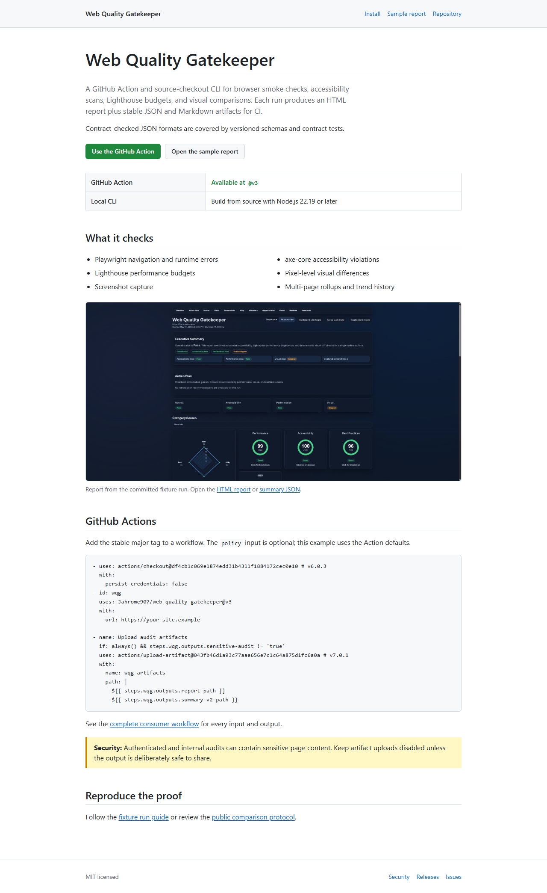

Auditing the project site
Web Quality Gatekeeper 3.2.4 audited two actual revisions of its own documentation site. Both passed. A separate, deliberately broken copy proved that the accessibility gate rejects a missing image description and produces an actionable report.
What was tested
The baseline is the site shipped with 3.2.3. The replacement is the 3.2.4 site. Each was served on loopback and audited with the same desktop configuration: a 1280 × 720 viewport, accessibility and Lighthouse checks enabled, and visual comparison disabled because the layout intentionally changed.
The captures were made on Windows with Node.js 22.22.3 on September 6, 2026 UTC. The measured replacement tree came from review commit 83c186b8ba8e0cf4df027c74e7680db531c3cf63; its site files are byte-identical to the merged 3.2.4 revision linked above.
| Check | 3.2.3 site | 3.2.4 site |
|---|---|---|
| Overall status | Pass | Pass |
| Accessibility violations | 0 | 0 |
| Lighthouse performance | 97 / 100 | 99 / 100 |
| Largest Contentful Paint | 1,053 ms | 753 ms |
| CLI exit code | 0 | 0 |
These are local laboratory measurements, not production field data or a statistically established speed improvement. Browser versions, CPU load, hosting, and network conditions affect results. Zero automated accessibility findings also does not establish complete accessibility.
Proving the failure path
In a temporary copy of the replacement site, the reproduction script removes the report image’s alt attribute. This is a controlled regression, not a defect found in the published site. The same audit then reports one image-alt violation, marks the run as failed, and exits with code 1. The action plan identifies the affected rule and recommends adding meaningful alternative text.
The unchanged replacement, with its image description present, passes with exit code 0. This demonstrates how a CI job can reject a concrete regression instead of merely generating a report that nobody reads.

Reproduce it
From a full source clone containing both release revisions, install the documented prerequisites, then run:
npm ci
npx playwright install chromium
npm run build
node scripts/case-study/run-project-pages.mjsThe script requires CLI and source version 3.2.4; it rejects newer or mismatched builds before auditing. It exports the two immutable site revisions, creates the temporary regression, runs all three audits, checks the expected exit codes, and closes its servers. Results are written to artifacts/case-study/project-pages/. A failed audit of either actual revision or a passing regression causes the script to fail.
Download the complete evidence bundle: HTML reports, screenshots, axe and Lighthouse payloads, summary JSON, action plans, exit codes, configuration, and a SHA-256 manifest. Loopback origins in the published text are normalized to https://project-pages.example/; metrics and timestamps are unchanged. That address is a label for local evidence, not a deployed audit target.
Read the reproduction script or inspect the recorded results.